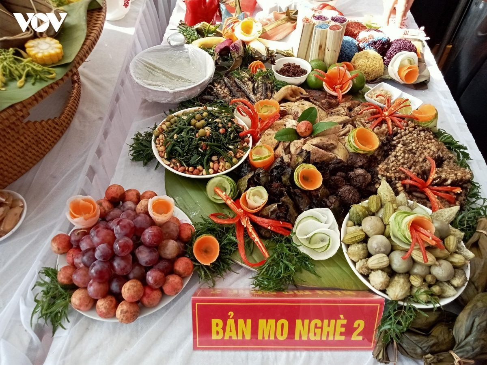
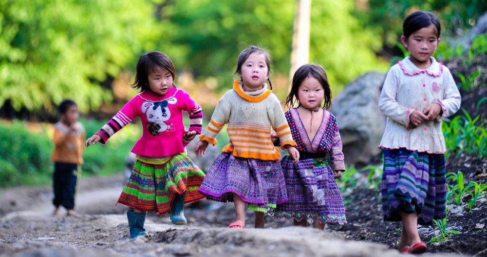

Vui “Tết Xíp xí” cùng trẻ em Sơn La
Tết Xíp xí của người Thái trắng ở Quỳnh Nhai và Phù Yên (Sơn La) được gọi là “Tết trẻ con” - một ngày mà những đứa trẻ được mặc quần áo mới, ăn những món ngon và nhận những lời chúc mong lớn lên khỏe mạnh. Từ một ngày Tết dành cho trẻ nhỏ, những phong tục được truyền lại qua nhiều thế hệ cũng theo đó mà ở lại trong đời sống của bản làng.
Tết về trong bộ áo mới
Nếu hỏi một đứa trẻ điều gì khiến em mong Tết nhất, có lẽ câu trả lời chẳng có gì phức tạp. Có thể là một bộ quần áo mới. Có thể là bữa cơm có những món ngày thường ít khi được ăn. Hoặc đơn giản là một ngày được chạy chơi cùng bạn bè mà không phải vội về nhà.
Với người Thái trắng ở Quỳnh Nhai và Phù Yên, Sơn La, ngày 14/7 âm lịch hằng năm là Tết Xíp xí. “Xíp xí” có nghĩa là ngày mười bốn. Đây là một phong tục đã có từ lâu đời, trong đó người lớn dành sự quan tâm đặc biệt đến thế hệ nhỏ tuổi.
Ngày Tết đến, những bộ quần áo nhiều màu sắc được ông bà, cha mẹ chuẩn bị cho trẻ. Những bộ quần áo được may từ trước, nằm ngay ngắn trong nhà và chờ đến đúng ngày để được mặc. Với người lớn, đó là cách trao gửi tình yêu thương cho những người con thân yêu trong gia đình. Còn với trẻ nhỏ, niềm vui đôi khi chỉ đơn giản là được diện bộ đồ mới và chạy ra ngoài vui chơi với đám bạn.
Mâm cơm có vị của ngày Tết
Tết Xíp xí không chỉ có quần áo mới. Trong căn bếp của mỗi gia đình, ngày Tết cũng được nhận ra bằng những món ăn được chuẩn bị cầu kỳ.

Mâm cỗ có cá nướng, thịt lợn khô, bánh ít, xôi ngũ sắc và đặc biệt là món vịt được chế biến cùng các loại gia vị theo cách truyền thống. Những món ăn ấy được đặt lên mâm cỗ trong ngày người lớn cầu mong những điều tốt lành, sức khỏe và may mắn cho gia đình, nhất là cho trẻ nhỏ.
Với bọn trẻ, có lẽ ý nghĩa của từng món ăn không phải điều dễ nói thành lời. Các em chỉ cảm nhận Tết qua những thay đổi rất gần gũi: một căn bếp thơm nức, một mâm cơm thịnh soạn… Từ những điều giản dị ấy, không khí Tết Xíp xí cũng hiện diện trong ký ức tuổi thơ của mỗi em nhỏ.
Những lời chúc dành cho bọn trẻ

Trong ngày Tết Xíp xí, trẻ nhỏ trở thành những người được cả gia đình dành nhiều sự quan tâm. Qua các nghi lễ và những lời chúc ngày tết, người lớn gửi gắm mong ước các em luôn khỏe mạnh, bình an và lớn lên thuận lợi.
Vì thế, Tết Xíp xí không chỉ hiện diện trong những bộ quần áo mới, những mâm cơm có thêm nhiều món ngon. Đó còn là dịp để tình cảm dành cho con trẻ được trao gửi rõ ràng hơn, qua sự chăm sóc của ông bà, cha mẹ và những lời chúc thân thương.
Người lớn mong các em lớn lên khỏe mạnh. Còn với trẻ nhỏ, có lẽ niềm vui của ngày Tết chỉ đơn giản là được mặc những trang phục mới, được vui chơi cùng bè bạn và có một ngày thật vui bên gia đình.
Một ngày Tết để lớn lên
Tết Xíp xí được tổ chức từ lâu trong cộng đồng người Thái trắng ở Sơn La và được trao truyền qua nhiều thế hệ. Không chỉ gắn kết gia đình, ngày Tết còn góp phần củng cố tình làng bản và gìn giữ bản sắc văn hóa của cộng đồng.
Năm 2024, “Nghi lễ Tết xíp xí của người Thái trắng huyện Quỳnh Nhai, huyện Phù Yên, tỉnh Sơn La” được Bộ Văn hóa, Thể thao và Du lịch công nhận là di sản văn hóa phi vật thể quốc gia. Sự ghi nhận này cũng góp thêm động lực để cộng đồng tiếp tục gìn giữ và trao truyền những giá trị văn hóa truyền thống. Với người lớn, đó là một nghi lễ cần được gìn giữ. Với trẻ nhỏ, Tết Xíp xí có thể chỉ là một ngày được mặc bộ quần áo đẹp, ăn một bữa cơm ngon, nghe người lớn chúc mình lớn nhanh rồi chạy ra sân tìm bạn.
Nhưng có lẽ chính từ những điều giản dị ấy mà một đứa trẻ bắt đầu nhớ về bản làng của mình.
Và khi em lớn lên, những ký ức về một ngày Tết dành riêng cho trẻ nhỏ có thể sẽ theo em đi rất xa.